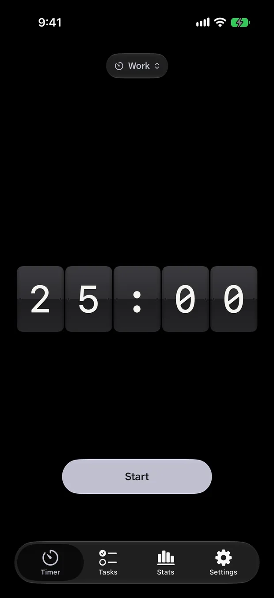

Productivity
Flap Pomodoro
A focus timer that clatters.
iPhone · Mac · Apple TV · Vision Pro · Watch

The app
A focus timer that clatters.
The Pomodoro technique rendered as a split-flap board, with the minutes physically falling away, plus a Mac menu bar timer, tasks and statistics.
A design study that turned into a real app: the same timer idea as Pomodoro given a completely different physical metaphor, then taken across iPhone, Mac, Apple TV, Vision Pro and Watch.
Features
What it actually does.
A split-flap countdown
Mac menu bar timer
Five platforms
Tasks and statistics
Privacy
Entirely on-device.
StorageOn device
On-device
AnalyticsNone
No analytics of any kind.
Third partiesNone
No third-party SDKs, trackers or advertising.